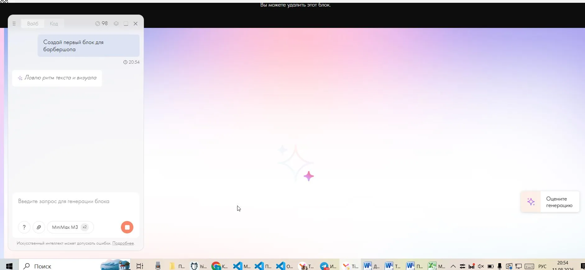
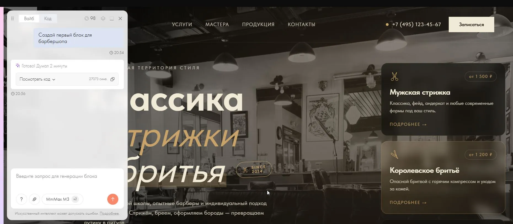
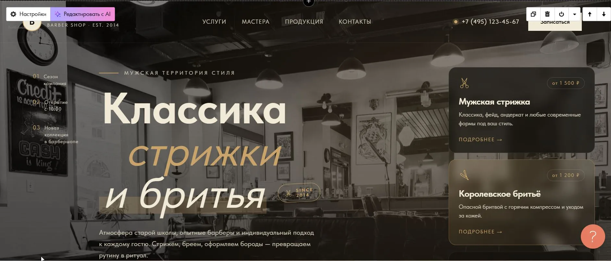
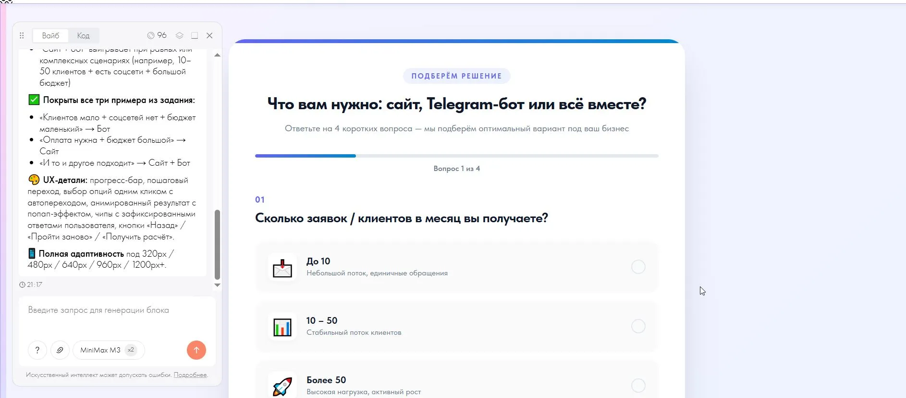
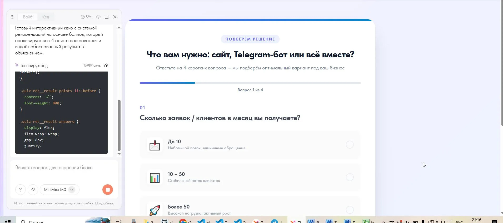
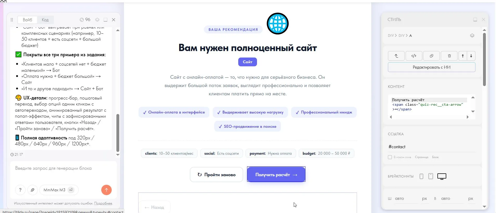

Тильда выкатила функцию, которая по текстовому описанию сама пишет код блока для сайта - без разработчика и без знания вёрстки. Называется вайб-блок, с апреля 2026 года про неё уже написал и Forbes, и несколько отраслевых площадок. Но почти все эти материалы официальные или рекламные - никто ещё не показал, что получается, если просто взять и попробовать, без идеального промта и без подстраховки.
Я протестировала вайб-блок на двух реальных сценариях - сайте барбершопа и квизе с логикой подбора услуги. Один раз результат обогнал ожидания за 2 минуты. Второй раз блок уверенно выдал ответ, который не соответствовал тому, что я ввела. Показываю оба случая на скриншотах.
Каждую неделю разбираю новое про сайты, ботов и работу с ИИ. Подпишитесь на сообщество ВКонтакте, чтобы не пропустить.
Что вообще за вайб-блок и почему все о нём заговорили
Официальное определение из справки Тильды: «Вайб-блок - это новый блок в библиотеке, который генерирует свой контент с помощью ИИ по вашему запросу». Функцию анонсировали 27 апреля 2026 года, широко о ней заговорили 13 мая. Подход у Тильды свой: по итогам своего теста я бы своими словами описала его так - достроить то, чего не хватает в обычном no-code редакторе. No-code означает буквально «без кода»: собираете сайт из готовых блоков мышкой, а не пишете HTML руками. Часть зарубежных AI-конструкторов работает иначе - сразу собирают весь сайт с нуля по одному запросу, без готового каркаса, который есть у вас на Тильде.
Генеральный директор Тильды Анастасия Васильева объяснила идею в комментарии для Forbes. «Вайб-кодинг снижает порог входа в диджитал-среду для миллионов пользователей: теперь создавать цифровые продукты могут не только разработчики, но и специалисты без технической подготовки, у которых есть идеи и понимание задачи». В том же материале приводится статистика: 55% российских владельцев малого и среднего бизнеса уже пользуются конструкторами сайтов, а 49% предпринимателей пробовали нейросети для рабочих задач. Цифры взяты из партнёрского спецпроекта Forbes и Тильды - это маркетинговая статистика компании, а не независимое исследование, но по моим собственным наблюдениям за клиентами порядок величины похож на правду.
Как это работает по шагам
По официальной инструкции Тильды процесс выглядит так:
- Блок добавляется из библиотеки блоков, раздел «Другое».
- В поле чата вводится запрос обычными словами - что должно быть на странице и как оно должно себя вести. Это и есть тот самый промт: короткая текстовая инструкция для ИИ, без специального синтаксиса.
- Выбирается модель ИИ для генерации - у каждой модели своя «цена» в запросах, расход показан рядом с названием.
- ИИ собирает блок прямо в редакторе. Результат можно доработать через визуальную панель стилей без кода или отредактировать HTML/CSS/JS напрямую - тем, кто в этом разбирается.
К запросу можно прикреплять файлы, изображения и видео, у блока есть история версий с возможностью откатиться назад, а отдельные элементы внутри уже готового блока можно доправить точечным запросом к ИИ, не переписывая всё заново. Из справки Тильды: при генерации вайб-блок получает данные о стилях проекта - шрифты и общие настройки дизайна (Тильда называет это Global styles) - и использует их, если это уместно задаче, чтобы новый блок не выбивался из оформления остального сайта.
Что я попросила сделать - и что получилось
Промт был максимально простым и без единой детали - именно так обычно пишет владелец бизнеса, который впервые открыл эту функцию: «Создай первый блок для барбершопа».

Через 2 минуты блок сообщил: «Готово! Думал 2 минуты», код блока занял около 27 000 символов.

Правок не потребовалось ни одной. Блок сам подобрал стоковое фото барбершопа - с CDN самой Тильды (это её собственное облачное хранилище картинок), без единой загруженной мной картинки. Дизайн получился цельным: тёмный фон, золотые акценты, карточки услуг с ценами.

А дальше - главная находка этого теста. Блок сам придумал и вставил конкретику, которую я не просила: телефон +7 (495) 123-45-67, цены на услуги - от 1500 ₽ за мужскую стрижку и от 1200 ₽ за королевское бритьё, фразу «EST. 2014» рядом с логотипом.
Ни один из этих фактов не был в промте. ИИ не оставляет поля пустыми - он генерирует правдоподобные, но полностью выдуманные бизнес-данные: телефон, цены, дату основания заведения. Невнимательный владелец бизнеса вполне может опубликовать такой блок как есть, даже не заметив, что телефон на сайте чужой, а цены нейросеть придумала сама. Это моё собственное наблюдение после теста, и я бы советовала относиться к нему как к главному практическому правилу работы с вайб-блоком: любой сгенерированный текст с цифрами и контактами нужно вычитывать построчно, прежде чем публиковать.
Хотите себе такой инструмент, но без риска пропустить выдуманный телефон в готовом сайте? Сайт на Тильде под ключ - я сама вычитываю и проверяю каждую цифру, прежде чем сайт уходит в публикацию.
Где он споткнулся
Второй тест сложнее первого: квиз «сайт, бот или сайт+бот» с логикой на 4 вопроса и тремя явно расписанными в промте сценариями - когда нужен только бот, когда только сайт, когда нужны оба.
Прежде чем начать генерацию, блок сам написал план в чате - и в этом плане видно ключевую деталь:

В плане дословно значилось: «Покрыты все три примера из задания: "Клиентов мало + соцсетей нет + бюджет маленький" → Бот; "Оплата нужна + бюджет большой" → Сайт; "И то и другое подходит" → Сайт + Бот». В логику оказались зашиты буквально три конкретных примера из моего промта. Общего правила, которое покрывало бы любую возможную комбинацию ответов, в плане не было.
Анкета внешне получилась безупречной - прогресс-бар, аккуратные иконки, «Вопрос 1 из 4».

Я прошла квиз с комбинацией ответов, которой не было ни в одном из трёх заявленных сценариев. Клиентов 10-50 в месяц - средний поток, не «мало» и не «много». Соцсети есть, оплата нужна, бюджет 20 000 - 50 000 ₽ - тоже средний, а не «большой», как в явном правиле про оплату.

Результат: «Вам нужен полноценный сайт», обоснование - «выдержит большой поток заявок». Только я указала средний поток заявок, а не большой. Система не сообщила, что моя комбинация ответов не попадает ни в один из трёх заявленных случаев - она молча съехала к одной переменной («нужна оплата» → «сайт») и подписала вывод уверенной формулировкой, которая не соответствует введённым данным.
Визуально с блоком всё в порядке - он работает и выглядит идеально, ошибки на экране нет. Спотыкается именно бизнес-логика для случаев за пределами того, что явно расписано в промте. На vc.ru в разборе реальной практики вайб-кодинга в бизнесе есть точная фраза на этот счёт: «Как только триггеров становится больше трёх, этой системе приходит кердык». Там это была абстрактная цитата из чужого исследования. Здесь - конкретный воспроизводимый пример: мой ввод, мой промт, мой результат.
Сколько это стоит на самом деле
| Тариф | Лимит запросов |
|---|---|
| Free | 5 раз в 12 часов / 20 в месяц |
| Personal Trial | 10 / 30 |
| Student | 15 / 40 |
| Personal | 50 / 100 |
| Business | 50 / 100 |
Дополнительные запросы сверх лимита можно докупить в личном кабинете. Оба моих теста уложились в пару запросов каждый - для разового знакомства с функцией бесплатного лимита достаточно с запасом. Если планируете использовать вайб-блок регулярно, для 2-3 нестандартных элементов на сайте в месяц лимита Personal тоже, скорее всего, хватит.
Для чего это реально пригодится
Официальные примеры Тильды и похожие кейсы из независимых разборов сходятся в одном: вайб-блок чаще всего используют для:
- квизов и тестов с логикой подбора (мой тест выше - как раз такой случай);
- калькуляторов - стоимости услуги, ипотеки, доставки;
- расписаний с вкладками и фильтрами - например, программа мероприятия;
- анимированных промо-секций и обложек;
- многошаговых форм с условной логикой.
Здесь есть и практический плюс: формы, собранные внутри вайб-блока, поддерживают стандартные интеграции Тильды - заявки можно направлять в CRM (систему учёта клиентов и заявок), на почту или в мессенджер, без отдельной настройки с нуля.
Чего вайб-блок не умеет
На Хабре 28 июля вышла статья пользователя n_cto о том, как он пересобирал старые сайты с помощью Claude Code, включая лендинг, изначально сделанный на Тильде. Это смежный, более широкий подход к переработке кода через ИИ, отдельный от вайб-блока Тильды. Причина, по которой автор в итоге ушёл с Тильды, показательна: «часть фич конструктор не тянет в принципе, сколько ни плати». Речь про API (программный интерфейс для связи с другими сервисами), мобильное приложение, полноценную систему ролей для сотрудников. Вайб-блок отлично решает задачу «мне нужен один нестандартный элемент на странице», но не превращает Тильду в платформу с возможностями кастомной разработки.
Главный риск - код, который никто не читал
В официальной справке есть две формулировки рядом: «Для редактирования кода блока могут потребоваться базовые знания в HTML, CSS и JavaScript» и отдельно - «техническая поддержка Тильды не консультирует по вопросам работы с кодом». Это честное предупреждение, но на практике оно означает: пока блок работает через новый запрос к ИИ, всё удобно. В момент, когда нужна тонкая ручная правка - как в случае квиза, где логику стоило бы расширить на любые комбинации ответов вместо трёх частных примеров, - помощи от Тильды не будет.
Автор с Хабра формулирует эту же мысль на своём опыте с AI-сгенерированным кодом в целом: «когда через год прилетит по-настоящему хитрый баг, разбираться придётся с нуля». У AI-кода нет «памяти» о собственных решениях - и его непрозрачность накапливается как риск, который не виден в момент, когда всё работает красиво.
Тильда, Craftum, Flexbe - у кого какой подход к ИИ
| Конструктор | Что делает ИИ |
|---|---|
| Тильда | Генерирует один нестандартный блок внутри уже собранного сайта |
| Craftum | Генерирует лендинг целиком по описанию бизнеса - структуру, тексты, наполнение |
| Flexbe | Традиционный конструктор с AI-режимом поверх: без нейросети платформа работает как обычно, ИИ предлагает готовый сайт и несколько вариантов структуры на основе похожих сайтов в нише |
Если вам нужен готовый сайт целиком по короткому описанию - интереснее присмотреться к Craftum или Flexbe. Если у вас уже есть сайт на Тильде и не хватает одного нестандартного элемента - вайб-блок решает именно эту, более узкую задачу.
Стоит ли пробовать прямо сейчас
По моему тесту вайб-блок отлично справляется с задачами, где итог - это конкретный, видимый глазами объект: блок, карточка, промо-секция. Там, где нужна логика, которая должна честно работать на любой комбинации ввода, а не только на примерах из промта, результат может выглядеть идеально и при этом ошибаться молча.
Если решите попробовать сами: пишите промт максимально подробно, особенно если в блоке есть логика с несколькими условиями, - формулируйте общее правило для каждой переменной вместо трёх частных примеров, как сделала я. И обязательно вычитывайте результат построчно, прежде чем публиковать: любая цифра, телефон или дата, которые вы не вводили сами, скорее всего, придуманы нейросетью.
Похожий вывод я уже делала на другом тесте: почему дешёвый ИИ-сайт может обойтись дороже - там тоже красиво снаружи, а разбираться приходится потом. А если задумываетесь, заменит ли ИИ живого специалиста целиком - вот честный разбор: заменит ли ИИ веб-дизайнера.
Я сама тестирую такие функции на живых сценариях, а не по рекламным анонсам - и точно так же построчно вычитываю каждую цифру и факт, когда делаю сайт клиенту. Нужен сайт на Тильде или Telegram-бот под ключ - сделаю сама, под ключ →